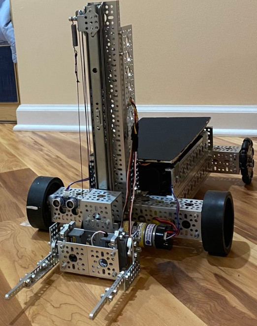

For my Edison Academy Magnet School capstone project, I led a team of 4 other students, Rithvik Mattipalli, Ayush Mandal, and Timothy Bess, in addressing the lack of automation in warehouses and occupational injuries due to forklift accidents based on prior personal research that was presented to the former US Assistant Secretary of Labor.

The Warebot